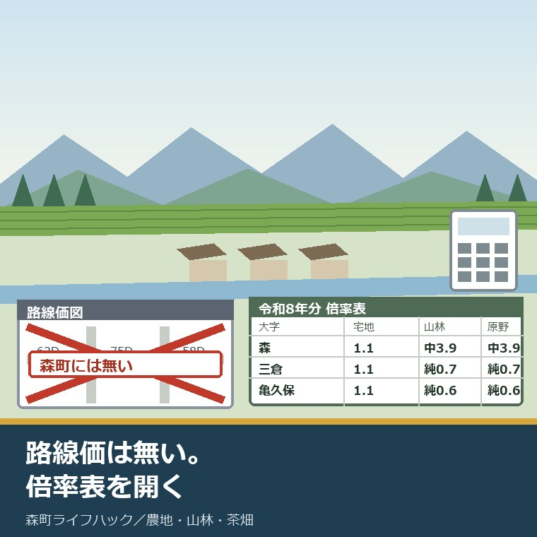
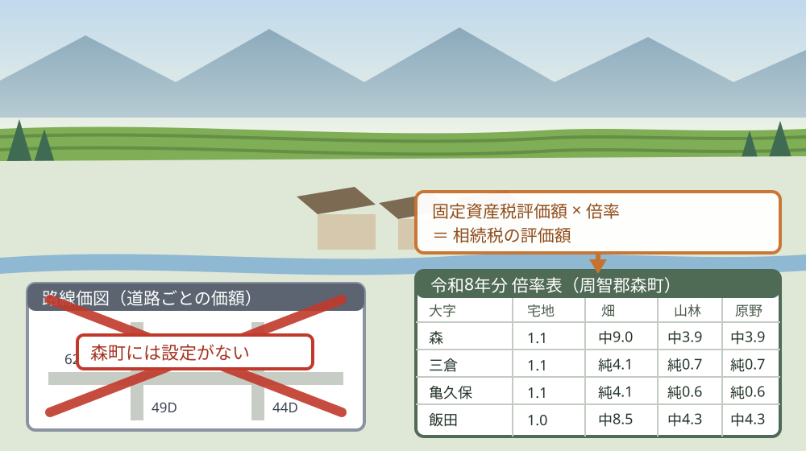
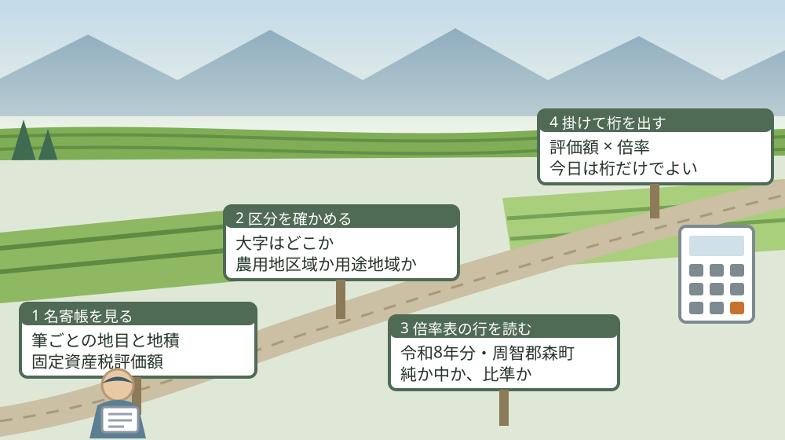

森町の畑と山に路線価はない——倍率方式で土地の値段を見る

この記事の要点
Q. 森町の畑と山を相続しました。路線価で調べようとしたら、森町の地図が出てきません。いくらの資産として数えればよいのでしょうか。
A. 森町に路線価図はありません。倍率表を見ます。国税庁の令和8年分財産評価基準書によれば、静岡県で路線価図があるのは26市区町村で、周智郡森町は入っていません。森町は倍率地域です。固定資産税評価額に、大字ごとの倍率を掛けます。まず名寄帳で評価額を出してください。
静岡県周智郡森町（遠州森町）の畑と山を相続した。いくらの資産として数えればよいのか分からない。この記事は、そういう方に向けて書いています。
調べようとしたこと自体が、正しい入口だと私は思います。相続の話は、金額の見当がつかないまま進めると必ず止まります。兄弟で分ける話も、申告が要るかどうかも、ここから始まります。
ただ、森町の土地を路線価で調べようとすると、最初でつまずきます。国税庁のサイトで静岡県を開いても、路線価図の一覧に森町が出てこないからです。これは不備ではありません。
2026年7月1日、国税庁は令和8年分の路線価等を公開しました。森町の分は、路線価図ではなく「倍率表」に載っています。大字ごとに、宅地・田・畑・山林・原野の倍率が並んでいます。
この記事では、その倍率表と国税庁の説明から確定できることを並べ、森町の実際の大字の数字を書き出します。まだ分け方を決めていない段階でも、桁が分かるだけで話が進みます。
公式情報から確定できること
2026年8月20日時点で、国税庁と森町公式サイトから確認できた事実を並べます。出典は記事の末尾に載せています。
一つ目。公開の日付が確定しています。国税庁の「令和８年分の路線価等について」（令和8年7月）は「令和８年分の路線価等を７月１日（水）に国税庁ホームページで公開しました。」としています。掲載範囲は平成30年分から令和8年分までです。
二つ目。適用される期間も決まっています。国税庁の財産評価基準書は「令和８年１月１日から12月31日までの間に相続、遺贈又は贈与により取得した財産に係る相続税及び贈与税の財産を評価する場合に適用します。」としています。
三つ目。価格の水準も明示されています。同庁は「路線価等は、１月１日を評価時点として、１年間の地価変動などを考慮し、地価公示価格等を基にした価格の８０％程度を目途に定めています。」としています。時価そのものではなく、8割程度という設計です。
四つ目。二つの方式が分かれています。同庁は「路線価が定められている地域（路線価地域）にある土地については路線価方式により評価し、その他の地域（倍率地域）にある土地については倍率方式により評価します。」としています。
五つ目。倍率方式の計算は一行です。同庁は「倍率方式では、その土地の固定資産税評価額に地価事情の類似する地域ごとに定めた評価倍率を乗じて評価額を算出します。」としています。掛け算が一つあるだけです。
六つ目。どこを倍率地域にするかの考え方も公表されています。同庁は「原則として、市街地的形態を形成する地域については、路線ごとに地価変動が異なる蓋然性があることから「路線価地域」とし、それ以外の地域については、そのような蓋然性がないことから「倍率地域」としています。」としています。
七つ目。静岡県で路線価図があるのは26市区町村です。令和8年分財産評価基準書の静岡県の路線価図の目次には、葵区、清水区、駿河区、中央区、浜名区、熱海市、伊豆の国市、伊東市、磐田市、掛川市、函南町、菊川市、湖西市、御殿場市、島田市、清水町、下田市、裾野市、長泉町、沼津市、袋井市、藤枝市、富士市、富士宮市、三島市、焼津市が並んでいます。周智郡森町はここに入っていません。
八つ目。森町は倍率表の側に載っています。令和8年分の「評価倍率表（一般の土地等用）」の静岡県の目次に周智郡森町があり、表の右上には所管の税務署として磐田税務署と記載されています。
九つ目。大字は22件です。令和8年分の周智郡森町の倍率表には、天宮、飯田、一宮、牛飼、薄場、円田、大鳥居、鍛治島、葛布、亀久保、草ケ谷、嵯塚、城下、橘、問詰、中川、西俣、三倉、向天方、睦実、森、谷中の22の大字が五十音順に並んでいます。
十番目。借地権割合は町内で一律です。同表の借地権割合欄は、22の大字すべてで40パーセントと記載されています。
十一番目。宅地の倍率は1.0から1.2です。同表によれば、飯田の「都市計画上の用途地域の定められている地域」が1.0、城下の同区域と向天方の「上記以外の地域」の2が1.2、それ以外の多くの地域が1.1です。
十二番目。農地と山林は、記号付きで書かれています。国税庁「評価倍率表（一般の土地等用）の説明」によれば、農地の分類は純農地が「純」、中間農地が「中」、市街地周辺農地が「周比準」、市街地農地が「比準」または「市比準」です。山林は純山林・中間山林・市街地山林、原野も同様の三分類です。
十三番目。記号の一部は倍率ではありません。同説明は「「比準」、「市比準」及び「周比準」と表示してある地域は、付近の宅地の価額に比準（「宅地比準方式」という。）して評価する地域です。」としています。数字ではなく、近くの宅地の値段から出す地域です。
十四番目。森町の中心部は、その「比準」に当たります。倍率表によれば、大字「森」の都市計画上の用途地域の定められている地域は、宅地1.1に対し、田と畑が周比準、山林と原野が市比準です。天宮、牛飼、円田、城下、中川、向天方、睦実の用途地域内も同じ形です。
十五番目。同じ大字でも、区域で数字が変わります。大字「森」の「上記以外の地域」は、農業振興地域内の農用地区域が田 純5.0、畑 純6.3、それ以外が宅地1.1、田 中7.0、畑 中9.0、山林 中3.9、原野 中3.9です。
十六番目。畑の倍率は町内で最大9.0です。倍率表によれば、大字「森」と大字「睦実」の「上記以外の地域」の2で、畑が中9.0と記載されています。次いで牛飼の中8.9、飯田の中8.5です。
十七番目。田の倍率は最大8.3です。同表によれば、中川の「上記以外の地域」の2で田が中8.3です。農用地区域では、中川の純6.9が町内で最も高く、城下の純3.0が最も低くなっています。
十八番目。山林は1倍を下回る地域があります。同表によれば、亀久保の全域が純0.6、三倉の全域と大鳥居・問詰の「上記以外の地域」が純0.7、天宮・薄場・鍛治島・葛布・嵯塚・西俣などが純0.8です。
十九番目。一方で、山林が4倍を超える地域もあります。同表によれば、飯田の「上記以外の地域」の2は山林・原野とも中4.3、睦実の同区分は中4.2、森の同区分は中3.9です。同じ町内で、0.6から4.3まで開きます。
二十番目。「全域」と書かれた大字もあります。国税庁の説明によれば、適用地域名欄の「全域」は「その町（丁目）又は大字の全域が路線価地域又は倍率地域であることを示しています。」森町では薄場、鍛治島、葛布、亀久保、嵯塚、西俣、三倉が「全域」です。
二十一番目。計算例も公表されています。国税庁の説明には、宅地の固定資産税評価額10,000,000円に倍率1.1を掛けて11,000,000円、田の固定資産税評価額50,000円に倍率48を掛けて2,400,000円という二つの例が載っています。
二十二番目。固定資産税評価額の確認先も書かれています。同説明は「固定資産税評価額は、都税事務所や市（区）役所又は町村役場で確認してください。」としています。森町の土地なら、森町役場です。
二十三番目。森町での取り方と料金が分かっています。森町公式「税務関係証明書等の発行・閲覧」によれば、評価証明書は1納税義務者につき300円、名寄帳の閲覧は1納税義務者につき300円、評価通知書（登記用）は無料、公図の閲覧は1件300円、土地台帳・家屋台帳の閲覧は1冊300円です。
二十四番目。請求できる人にも条件があります。同ページによれば、本人・同一世帯親族以外の場合は委任状が必要で、「現在町外にお住まいの方は町外で住民票上同一世帯であっても、委任状が必要となります」とされています。ページの更新日は2023年8月18日です。
二十五番目。窓口と時間も確認できます。森町公式の固定資産関係の申請書のページによれば、担当は税務課資産税係（電話0538-85-6309）で、受付時間は月曜から金曜の8時30分から17時15分です。郵送請求は、申請書、切手を貼った返送用封筒、手数料分の定額小為替、本人確認書類のコピーを同封します。

この絵で描きたかったのは、森町の土地に値段が付いていないわけではない、という点です。形が違うだけです。道路ごとの地図か、大字ごとの表か。その違いです。
森町の土地に置き換えると、この倍率表は何を意味するか
ここからは、確認した事実を実際の土地に置き換えて考えます。私の見方が混じるので、事実と分けて読んでください。
まず、数字を私の商売の感覚に置き換えます。山林の倍率0.6は、固定資産税評価額より小さくなるということです。相続税の評価では、山は課税明細書に書いてある額を下回ります。
仮に、亀久保の山林の固定資産税評価額が10万円だとします。10万円に0.6を掛けて6万円。これが相続税の評価額の考え方です。分母は「固定資産税評価額10万円」という仮定で、実際の額は課税明細書か名寄帳で確認してください。
同じ10万円でも、地目と地域が変われば別の答えになります。大字「森」の「上記以外の地域」の2にある畑なら、10万円に9.0を掛けて90万円。山林（中3.9）なら39万円です。15倍の開きが、同じ町内にあります。
ここが、私がこの表を面白いと思う点です。森町の土地は、地目で値段が決まるのではなく、地目と地域の組み合わせで決まります。「畑だから安い」も「山だから価値がない」も、この表の前では成り立ちません。
次に、区域の話です。用途地域の中にある田と畑は「周比準」、山林と原野は「市比準」と書かれています。これらは倍率ではなく、付近の宅地の価額に比準して評価する地域です。
つまり、森町の中心部にある小さな畑は、掛け算では出ません。近くの宅地の値段から出発して、造成費などを差し引く形になります。ここは自分では計算しきれない領域です。
そして、農用地区域です。大字「森」の農用地区域は田 純5.0、畑 純6.3。同じ大字の「上記以外」の田 中7.0、畑 中9.0より低くなっています。農用地区域に入っているほど、評価は低く出ます。
これは、転用しにくい土地ほど評価が低いという設計です。使いにくさが、そのまま数字に出ている。私はこの表を、そう読みました。
最後に、桁の話をします。森町の山林の多くは純0.6から0.8です。山を何ヘクタール持っていても、相続税の評価額としては、想像よりずっと小さい額になることが多いと私は考えています。
良い点
この倍率表について、私が良いと考える点を三つ挙げます。順番に理由を書きます。
一つ目。22の大字すべての数字が、3ページに収まっていることです。路線価図なら何十枚も見比べる作業になりますが、倍率表はA4で3枚です。自分の土地の大字を探して、その行を読むだけで終わります。
二つ目。記号の意味が別ページで説明されていることです。「純」「中」「周比準」「市比準」が何を指すか、国税庁の説明ページに一覧で書かれています。計算例まで載っているので、税理士に頼む前に自分で桁を確かめられます。
三つ目。毎年7月1日に更新されることです。令和8年分は2026年7月1日に公開され、平成30年分から令和8年分までが同じサイトに並んでいます。いつの数字を使ったのかが、後から確認できます。私はこれを良い点として数えます。
付け加えると、借地権割合が町内一律40パーセントである点も、実務では分かりやすさにつながります。森町で土地を貸している、あるいは借りている場合の割合を、地区ごとに調べ直す必要がありません。
注文したい点
その上で、一つの事業者として注文したい点も三つあります。批判ではなく、現場から見て足りないと感じる情報の話です。
一つ目。倍率表だけでは、自分の土地がどの区分に入るか分かりません。「農業振興地域内の農用地区域」なのか「上記以外の地域」なのか。これは倍率表の側ではなく、町の農業振興地域整備計画の側にある情報です。二つの資料を突き合わせる必要があります。
二つ目。用途地域の内か外かも、表には書かれていません。大字「森」や「城下」には都市計画上の用途地域がありますが、自分の筆がその中かどうかは、都市計画の図面を見ないと分かりません。相続人が町外に住んでいる場合、ここで一度止まります。
三つ目。「比準」と書かれた地域の額を、素人が出す手段がありません。付近の宅地の価額に比準するとされていますが、その付近の宅地の価額をどこから取るのかは、この表からは追えません。森町の中心部に土地がある方ほど、自分では桁が出せない構造です。
加えて、これは注文というより私の迷いです。倍率表で出た評価額と、実際に売れる値段が一致するとは、私は思っていません。特に純山林です。評価額が固定資産税評価額の0.6倍でも、買い手が付くかどうかは別の話です。森町の山林の取引事例を、私は十分に持っていません。

この図で示したかったのは、倍率表を開くのが三番目だということです。先に必要なのは、名寄帳に載っている自分の数字です。手ぶらで表を見ても、掛ける相手がありません。
対案・結論
では、今日できることを書きます。森町の農地や山林を相続した方が、今日のうちに終えられる範囲に絞ります。
まず、固定資産税の課税明細書を探してください。亡くなった方の分が届いているはずです。見つからなければ、森町役場の税務課資産税係（電話0538-85-6309）で名寄帳を閲覧できます。1納税義務者につき300円です。
次に、筆ごとに「所在の大字」「地目」「地積」「固定資産税評価額」を書き写してください。この四つが揃えば、倍率表を読む準備が終わります。大字がどれかは、地番の頭に書いてあります。
それから、国税庁の令和8年分の倍率表で、周智郡森町のページを開いてください。自分の大字の行を探し、地目の列を見ます。数字が入っていれば掛け算、「比準」なら専門家に渡す印です。
その上で、掛けた結果を、桁だけメモしてください。何十万円なのか、何百万円なのか。今日の目的は正確な額ではなく、桁を知ることです。桁が分かれば、申告が要りそうかどうかの見当が付きます。
この四つが、今日できる小さな一歩です。税額まで出す必要はありません。兄弟に説明するときも、「畑が何百万、山が何十万」という桁の話ができれば、会話が具体的になります。
そして、分け方の結論は出さないでください。売るか、持ち続けるか、誰が引き受けるか。今日の成果は、判断材料が一つ増えたことだけで十分です。そもそも親名義の土地がどこにあるか分からない場合は、所有不動産記録証明制度で全国分を一枚にする記事から先に読んでください。
家族に残す記録
相談を受けていて、いちばん困るのは、土地の数字が誰にも分からない状態です。名義だけが移り、何筆あるのか、いくらのものなのかを誰も知らない。この形が、いちばん先へ進みません。
残す項目を挙げます。所在の大字、地番、地目、地積、固定資産税評価額、農用地区域かどうか、用途地域の内か外か。ここまでが1枚目です。
続いて、評価の計算を書きます。使った年分（令和8年分）、大字、適用地域名、地目ごとの倍率、掛けた結果。年分を書いておかないと、来年には使えない紙になります。
あわせて、手続きの状態を書きます。名寄帳を取ったか、評価証明書を取ったか、評価通知書（登記用）を取ったか、相続登記は済んだか。紙の名前と日付をそのまま書いてください。登記まで含めた順番は田んぼや畑を相続したときの記事にまとめてあります。
最後に、今日の日付と、確認に使った資料の名前を書いてください。倍率は毎年見直されます。いつ時点の話かが分かる記録だけが、来年も使えます。
大石の視点
ここからは、私の考えです。公表された事実とは分けて読んでください。
私は磐田市で小さな不動産の仕事をしていて、相続した土地をどうするか決めていない方の相談を一件ずつ受けています。森町の土地について、いちばん多く聞かれるのは「これ、いくらなんですか」です。その次に来るのが「売れるんですか」です。
この二つは、別の質問です。相続税の評価額は、国が決めた計算式の答えです。売れる値段は、買う人がいて初めて決まります。倍率表は前者しか答えません。
同時に、このままでは続かないとも思っています。山林の倍率が0.6や0.7という数字は、その土地が使われていないことの裏返しでもあります。使い道がある土地なら、この数字にはなりません。
今回の倍率表について、私は評価しています。22の大字すべてを、三ページに開いて見せる形は、相続人にとって親切です。ただ、表を読むための前提が二つ（農用地区域かどうか、用途地域の内か外か）欠けています。
だから私は、この表を「税の話」ではなく「持ち主の段取りの話」として読んでいます。先に名寄帳、あとに倍率表。この順番を持ち主が知っているかどうかで、同じ土地でも進み方が変わります。
ここには、私の商売の実感も混じっています。制度は知っている人だけが得をする。それが一番よくないと私は思っています。だからこの記事では、山林が0.6という数字まで書きました。
相続した家のほうを先に見たい方は価格より境界・接道・名義を確認する記事に、住む場所として考えたい方は通勤・買い物・災害地図を重ねる記事に書きました。どちらも、評価額とは別の物差しの話です。
土地の名義、境界、道路、農地まで含めて順に整理したい方は、ふじがおか実家カルテの森町相談窓口もご利用ください。売ると決めていなくても使える整理の道具として作っています。
まとめ
- 国税庁「令和８年分の路線価等について」（令和8年7月）によれば、令和8年分の路線価等は7月1日（水）に公開された（2026年8月20日確認）
- 同庁によれば、この基準は令和8年1月1日から12月31日までの相続・遺贈・贈与により取得した財産の評価に適用される
- 同庁によれば、路線価等は1月1日を評価時点とし、地価公示価格等を基にした価格の80パーセント程度を目途に定められている
- 同庁によれば、路線価地域は路線価方式、その他の地域（倍率地域）は倍率方式で評価し、倍率方式は固定資産税評価額に評価倍率を乗じて算出する
- 令和8年分財産評価基準書の静岡県の路線価図の目次には26市区町村が並び、周智郡森町は含まれていない
- 令和8年分の周智郡森町の倍率表（磐田税務署）には22の大字が並び、借地権割合はすべて40パーセント
- 同表によれば、宅地の倍率は飯田の用途地域内が1.0、城下の用途地域内と向天方の一部が1.2、その他の多くが1.1
- 同表によれば、畑の倍率は森と睦実の「上記以外の地域」の2で中9.0が町内最大、田は中川の中8.3が最大
- 同表によれば、山林は亀久保が純0.6、三倉・大鳥居・問詰が純0.7、天宮・薄場・鍛治島・葛布などが純0.8
- 同表によれば、山林の最大は飯田の一部の中4.3で、睦実の一部が中4.2、森の一部が中3.9
- 国税庁「評価倍率表（一般の土地等用）の説明」によれば、「純」は純農地・純山林、「中」は中間農地・中間山林、「周比準」は市街地周辺農地、「比準」「市比準」は市街地農地・市街地山林を指す
- 同説明によれば、「比準」「市比準」「周比準」の地域は付近の宅地の価額に比準（宅地比準方式）して評価する
- 同説明の計算例では、宅地の固定資産税評価額10,000,000円×倍率1.1＝11,000,000円、田の固定資産税評価額50,000円×倍率48＝2,400,000円
- 同説明によれば、固定資産税評価額は都税事務所や市（区）役所又は町村役場で確認する
- 森町公式によれば、評価証明書と名寄帳の閲覧はいずれも1納税義務者につき300円、評価通知書（登記用）は無料、公図の閲覧は1件300円
- 森町公式によれば、固定資産関係の担当は税務課資産税係（電話0538-85-6309）で、受付は月曜から金曜の8時30分から17時15分
よくある質問
Q1. 森町に路線価はありますか。
A1. 国税庁の令和8年分財産評価基準書によれば、静岡県で路線価図が定められているのは26市区町村で、周智郡森町は含まれていません。森町は倍率地域で、令和8年分の倍率表に22の大字ごとの倍率が載っています。土地の評価は、固定資産税評価額に倍率を掛ける倍率方式で行います。
Q2. 倍率方式では、いくらになりますか。
A2. 国税庁の説明によれば、倍率方式はその土地の固定資産税評価額に評価倍率を乗じて評価額を算出します。同庁の計算例では、宅地の固定資産税評価額1,000万円に倍率1.1を掛けて1,100万円です。森町の宅地の倍率は大字と地域の区分により1.0から1.2です。固定資産税評価額は町村役場で確認します。
Q3. 森町の山林の倍率はいくつですか。
A3. 令和8年分の周智郡森町の倍率表によれば、山林の倍率は地域で分かれます。亀久保は純0.6、三倉・大鳥居・問詰は純0.7、天宮・薄場・鍛治島・葛布などは純0.8です。一方、飯田の一部は中4.3、森の一部は中3.9です。「純」は純山林、「中」は中間山林を指します。
最後に一つだけ。ここに書いた公開日、倍率、記号の意味、手数料、窓口は、いずれも2026年8月20日時点で公表されている内容です。特定の筆が農業振興地域内の農用地区域に当たるか、都市計画上の用途地域の内か外か、「比準」と表示された地域の具体的な評価額、森町の山林の実際の取引価格は、公表資料からは確認できていません。相続税の申告が必要かどうかを含め、個別の評価と申告は税理士および所轄の磐田税務署の判断によります。動く前に、必ず森町役場の税務課資産税係（電話0538-85-6309）と税理士へご確認ください。
参考にした公式情報
- 令和８年分の路線価等について／国税庁（令和8年7月付の発表であること、「令和８年分の路線価等を７月１日（水）に国税庁ホームページで公開しました。」とされていること、平成30年分から令和8年分までを掲載していること、「路線価等は、１月１日を評価時点として、１年間の地価変動などを考慮し、地価公示価格等を基にした価格の８０％程度を目途に定めています。」とされていること、「路線価が定められている地域（路線価地域）にある土地については路線価方式により評価し、その他の地域（倍率地域）にある土地については倍率方式により評価します。」「倍率方式では、その土地の固定資産税評価額に地価事情の類似する地域ごとに定めた評価倍率を乗じて評価額を算出します。」と説明されていること、区分の基本的な考え方として「原則として、市街地的形態を形成する地域については、路線ごとに地価変動が異なる蓋然性があることから「路線価地域」とし、それ以外の地域については、そのような蓋然性がないことから「倍率地域」としています。」とされていることを2026年8月20日に確認）
- 令和8年分 評価倍率表 周智郡森町（PDF）／国税庁（表題が「令和 8年分 倍率表」、市区町村名が「周智郡森町」、所管が「磐田税務署」であること、天宮・飯田・一宮・牛飼・薄場・円田・大鳥居・鍛治島・葛布・亀久保・草ケ谷・嵯塚・城下・橘・問詰・中川・西俣・三倉・向天方・睦実・森・谷中の22の大字が並ぶこと、借地権割合が全て40パーセントであること、宅地の倍率が飯田の用途地域内1.0、城下の用途地域内および向天方の「上記以外の地域」の2が1.2、その他の多くが1.1であること、大字「森」の用途地域内が宅地1.1・田および畑が周比準・山林および原野が市比準、「上記以外の地域」の1（農用地区域）が田純5.0・畑純6.3、2が宅地1.1・田中7.0・畑中9.0・山林中3.9・原野中3.9であること、睦実の「上記以外の地域」の2が畑中9.0・山林中4.2、牛飼が畑中8.9、飯田が畑中8.5・山林中4.3、中川が田中8.3・農用地区域の田純6.9、城下の農用地区域の田が純3.0であること、山林が亀久保の全域で純0.6、三倉の全域および大鳥居・問詰の「上記以外の地域」で純0.7、天宮・薄場・鍛治島・葛布・嵯塚・西俣などで純0.8であること、薄場・鍛治島・葛布・亀久保・嵯塚・西俣・三倉の適用地域名が「全域」であることを2026年8月20日に確認）
- 評価倍率表（一般の土地等用）の説明／国税庁（「評価倍率は、路線価が定められていない地域の土地等を評価する場合に用います。」とされていること、適用地域名欄の「全域」が「その町（丁目）又は大字の全域が路線価地域又は倍率地域であることを示しています。」とされていること、農地の分類の略称が純農地「純」・中間農地「中」・市街地周辺農地「周比準」・市街地農地「比準又は市比準」であること、山林が純山林「純」・中間山林「中」・市街地山林「比準又は市比準」、原野も同様であること、「「比準」、「市比準」及び「周比準」と表示してある地域は、付近の宅地の価額に比準（「宅地比準方式」という。）して評価する地域です。」とされていること、計算例として宅地の固定資産税評価額10,000,000円×倍率1.1＝評価額11,000,000円、田の固定資産税評価額50,000円×倍率48＝評価額2,400,000円が示されていること、「固定資産税評価額は、都税事務所や市（区）役所又は町村役場で確認してください。」とされていることを2026年8月20日に確認）
- 令和8年分 財産評価基準書 静岡県（路線価図）／国税庁（路線価図の目次に葵区・清水区・駿河区・中央区・浜名区・熱海市・伊豆の国市・伊東市・磐田市・掛川市・函南町・菊川市・湖西市・御殿場市・島田市・清水町・下田市・裾野市・長泉町・沼津市・袋井市・藤枝市・富士市・富士宮市・三島市・焼津市の26市区町村が掲載され、周智郡森町が含まれていないことを2026年8月20日に確認）
- 税務関係証明書等の発行・閲覧／静岡県森町（評価証明書が「1納税義務者につき 300円」、名寄帳の閲覧が「1納税義務者につき 300円」、評価通知書(登記用)が「無料」、公図の閲覧が「1件 300円」、土地台帳・家屋台帳の閲覧が「1冊 300円」、資産証明書・公課証明書が「1納税義務者につき 300円」であること、「本人、同一世帯親族以外の場合は委任状が必要です（現在町外にお住まいの方は町外で住民票上同一世帯であっても、委任状が必要となります）。」とされていること、郵便請求の際に本人確認書類のコピーの添付が必要とされていること、担当が税務課町民税係（電話0538-85-6308）であることを2026年8月20日に確認。更新日 2023年08月18日）
- 申請書（評価証明書、評価通知書、公課証明書、資産証明書、公図、土地台帳、家屋台帳、名寄帳）／静岡県森町（証明書交付申請書（固定資産関係）、公簿閲覧申請書、郵便請求による証明書等交付申請書、委任状の様式が掲載されていること、郵送請求について「請求書に必要事項を記入し、切手を貼った返送用封筒、手数料分の定額小為替（ゆうちょ銀行にて販売）、請求者の身分証明書のコピーを同封してください。」とされていること、担当が税務課資産税係（電話0538-85-6309）で受付時間が月曜から金曜の8時30分から17時15分であることを2026年8月20日に確認。更新日 2023年11月13日）

最終確認日：2026-08-20 ／ 本記事は公表情報と執筆者の見解を分けて記載しています。特定の筆が農用地区域に当たるか、用途地域の内か外か、「比準」と表示された地域の具体的な評価額、森町の山林の実際の取引価格は公表資料から確認できていません。相続税の評価と申告の要否は税理士および所轄の磐田税務署の判断によります。動く前に、必ず森町役場の税務課資産税係（電話0538-85-6309）と税理士へご確認ください。